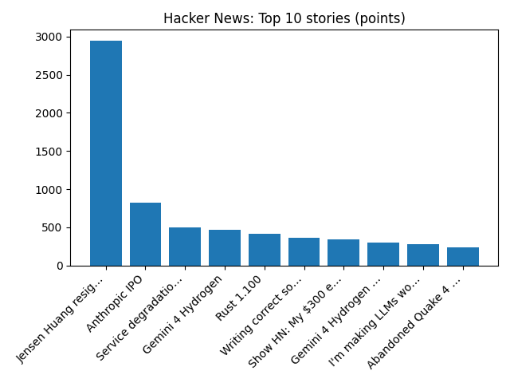

Microsoft struggling to restore service as global outage affects Outlook and Teams
BBC — Tech
YOUR DAILY INTELLIGENCE BRIEF · 2026-11-13
Global watch: Microsoft struggling to restore service as global outage affects Outlook and Teams, Is Outlook down? Widespread outage hits Microsoft email and other apps.
Northern Virginia: Massive house party thrown for teen ends with charges for Northern Virginia parents - FOX 5 DC, Northern Virginia Performing Arts celebrates first anniversary - Loudoun Times-Mirror.

Global coverage includes Microsoft struggling to restore service as global outage affects Outlook and Teams; Is Outlook down? Widespread outage hits Microsoft email and other apps; 5 people are shot in DC, including 1 killed at a gym, and then suspect kills himself - AP News. Local coverage includes Massive house party thrown for teen ends with charges for Northern Virginia parents - FOX 5 DC; Northern Virginia Performing Arts celebrates first anniversary - Loudoun Times-Mirror.

Trigonopterus bawangensis
Trigonopterus bawangensis is a species of flightless weevil in the genus Trigonopterus from Indonesia. It is mostly ferruginous, with a dark ferruginous to black pronotum.
https://en.wikipedia.org/wiki/Trigonopterus_bawangensis
Runs so far today: 1